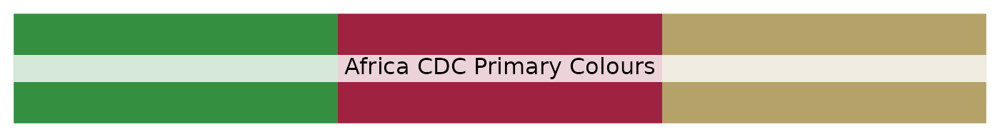
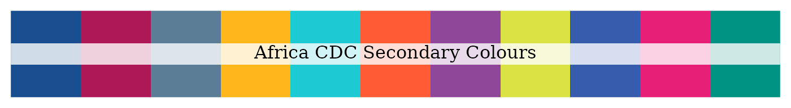

Africa Centres for Disease Control and Prevention (Africa CDC) is a specialised technical institution of the African Union established to support public health initiatives of Member States and strengthen the capacity of their public health institutions to detect, prevent, control and respond quickly and effectively to disease threats.
Africa CDC vision and mission
A safer, healthier, integrated and prosperous Africa, in which Member States can efficiently prevent disease transmission, implement surveillance and detection, and always be prepared to respond effectively to health threats and outbreaks.
To strengthen the capacity, capability and partnerships of Africa’s public health institutions to detect and respond quickly and effectively to disease threats and outbreaks based on science, policy and data-driven interventions and programmes.
Africa CDC Colours
The Africa CDC employs three corporate colours: Green, Gold and Black.

These are complemented by a set of five secondary colours.
